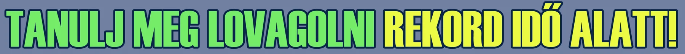
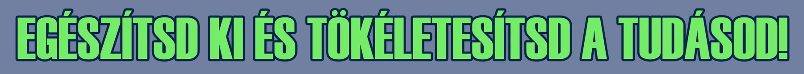
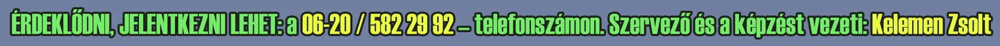
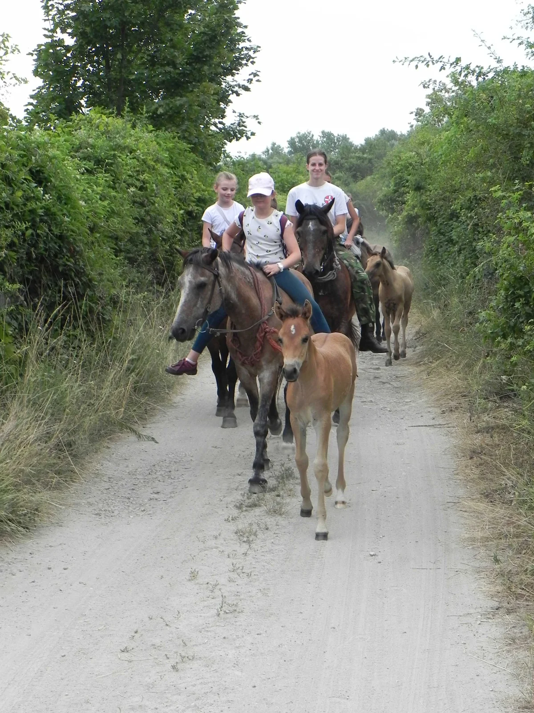
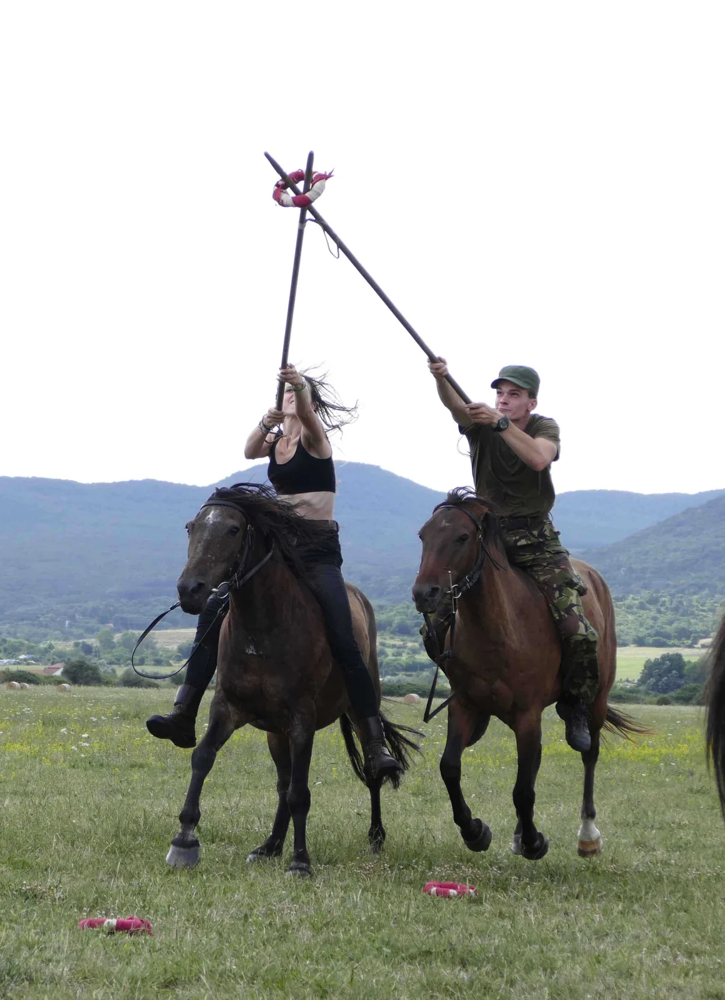
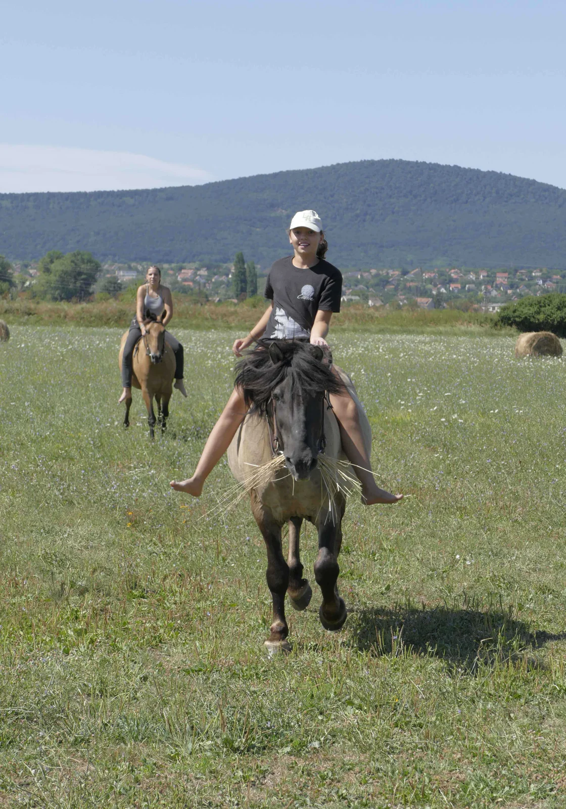
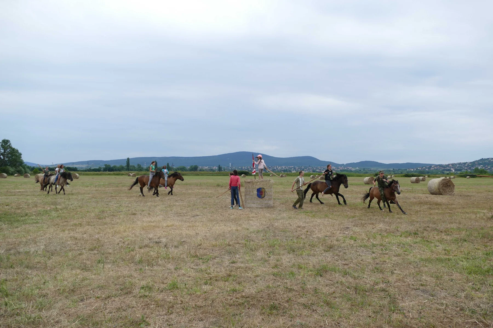
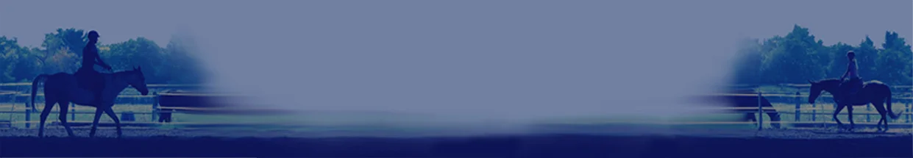

... Nem akarsz mindenféle, nagyrészt felesleges sportfelszereléseket beszerezni?
... Nem akarsz hónapokig futószáron, poros karámokban körbe-körbe dülöngélni?
Nem akarsz célod eléréséhez alkalmatlan, szükségtelen gyakorlatokat ismételgetni?
Nem akarsz hosszan tartó, ésszerűtlen oktatásban részesülni?
Nem akarsz igazi lovas tapasztalatok nélkül maradni?
.És nem akarsz mindezekre horribilis pénzeket kifizetni?


Ha elhatározásod helyes önértékeléssel párosul, a páratlan élmények és a siker garantált!
A képzéseken való részvétel 8 éves kortól javasolt.
5 és 10 alkalmas egyéni, és (max. 12 fős) csoportos lovas képzés választható....
Az 5 alkalmas képzés végére: a résztvevő képessé válik a ló alapvető ápolását elvégezni (patáit biztonságosan felemelni), kantározni, felvezetni, (ha jó mozgáskészséggel rendelkezik - ló hátára felugrani), a lovat biztosan megállítani, elindítani, irányítani, ügetés lépésütembe váltani és folyamatosan ügetni …
A 10 alkalmas képzés végére: mindezeken felül, a lovat ügetés közben is biztosan irányítani, tereptárgyak,
akadály/ok felett átléptetni, kantár nélkül – súllyal irányítani, lefektetni, közösen alaki gyakorlatokat végezni, ...Ezt az eredményt korábban a „Nemzeti Lovasprogram” (2006’) keretei és egyéb iskolai csoportok számára szervezett lovas képzéseken 100%-ban elértük,
melyek mellett 25 éve működő egyesületünk, számtalan referenciával és széleskörű tapasztalatokkal rendelkezik.

A foglalkozások 2024. szeptember 12.-től indulnak, időtartamuk: alkalmanként 1,5-2 óra,
gyakoriságuk egyeztetés szerint: heti legalább 2, maximum 4 alkalom,
időpontok: egyeztetés szerint.A jelentkezők kiválóan képzett, nyugodt természetű, együttműködésre szoktatott lovakkal,
természetes körülmények között ismerhetik meg a lovaglás alapjait, a hagyományos Hun-Magyar katonai lovaglóstílus módszereit.
A megszerezhető tudás bármely lovas sporthoz, lovas tevékenységhez kiváló, biztonságos alapokat biztosít,
illetve pótolja a még hiányzó ismereteket, tapasztalatokat, élményeket.Hogy ne érjen csalódás: A képzés alapszintű (!), a megyezerzett tudás elmélyítéséhez és tökéletesítéséhez további gyakorlás, lovakkal történő kapcsolattartás nem nélkülözhető! Lovas tevékenységekhez mindenképpen szükséges bizonyos mértékű "tehetség", megfelelő habitus és motiváció! A képzésre jelentkezők a helyszín és a lóállomány megtekintésekor egyúttal - díjtalanul - kipróbálhatják, rendelkeznek-e a megfelelő képességekkel.



{kind=link}



{kind=link}

{kind=link}


{kind=link}

{kind=link}
